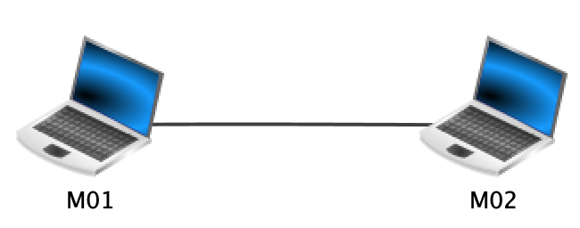
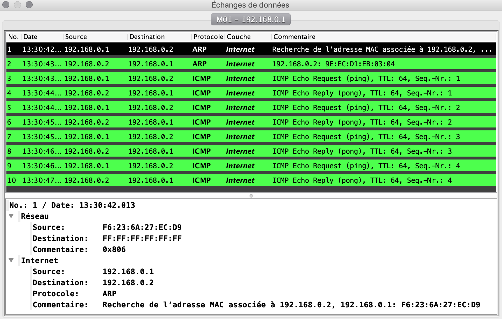
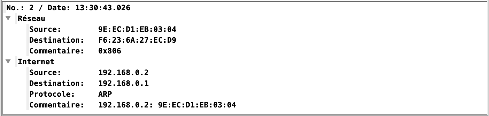
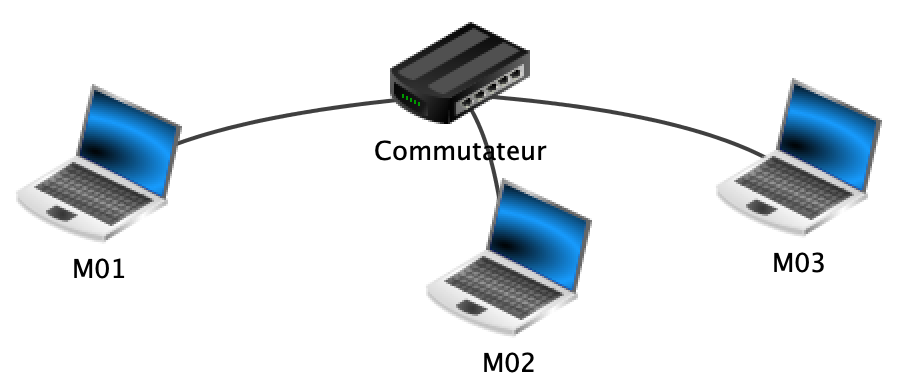
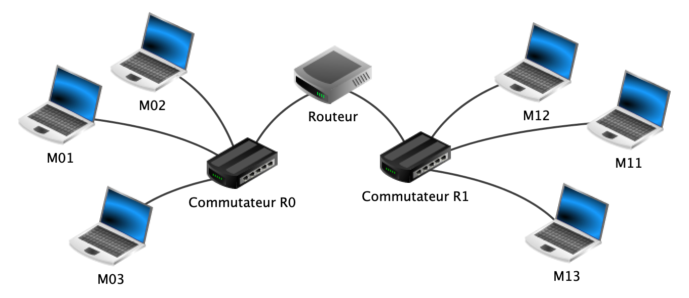
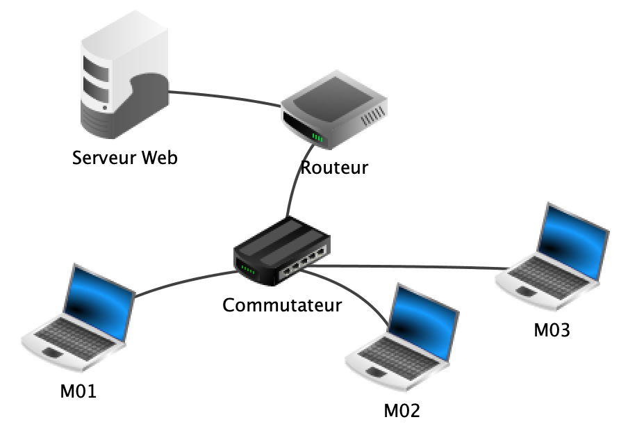
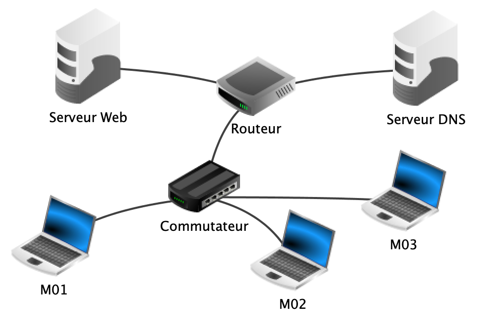

Simulation de réseaux avec Filius
Le logiciel Filius
Télécharger le logiciel Filius
Se rendre sur le site allemand du logiciel Filius https://www.lernsoftware-filius.de/Herunterladen.
Chercher la version actuelle, par exemple "Filius 1.12 (Windows/Ubuntu/Zip) "
Cliquer sur son système d'exploitation : Windows ou Ubuntu
(Avec MacOS, cliquer sur Zip : après extraction de l'archive, le fichier à ouvrir est alors filius.jar)
Si le texte apparaît en allemand lors de l’installation, accepter les choix par défaut. Lors du premier lancement du logiciel, choisir la langue “Français”.
Aide sur le mode conception
Construire le réseau
-
Cliquer sur l'icône Conception :
-
À l’aide d’un cliquer-glisser à la souris, sélectionner des composants dans la marge de gauche et les disposer sur l’espace de travail.
-
Raccorder les composants à l’aide de câbles. Pour cela, sélectionner l’outil câble en cliquant sur l’icône câble dans la marge de gauche, puis cliquer successivement sur deux composants à raccorder.
-
Utiliser le menu contextuel d’un composant (clic droit) pour le supprimer ou supprimer ses connexions.
Paramétrer les composants du réseau
-
Double-cliquer sur le composant à paramétrer. Un ensemble de paramètres apparait dans la partie inférieure de la fenêtre. Les noms des composants peuvent être choisis arbitrairement : ils n’ont aucune répercussion sur le fonctionnement de la simulation.
-
Ordinateur/portable : l’adressage IP peut être spécifié manuellement ou de façon automatique à l’aide d’un serveur DHCP.
-
Switch : un switch, ou commutateur, permet d’interconnecter plusieurs composants entre eux au sein d’un réseau local. Ce composant ne nécessite pas de configuration.
-
Routeur : un routeur dispose d’au moins deux interfaces réseau. Chaque interface doit être configurée manuellement. Il faut également paramétrer le routage, soit en activant le mode automatique, soit en définissant des règles manuellement.
Aide sur le mode simulation
- Cliquer sur l'icône Simulation :
Ce mode permet de simuler le fonctionnement du réseau virtuel.
-
Installer et utiliser des logiciels
Chaque ordinateur et portable possède un bureau à partir duquel peuvent être installées puis lancées des applications. Un clic sur l’icône d’un ordinateur ou d’un portable fait apparaitre son bureau dans une fenêtre indépendante. Pour installer des logiciels, cliquer sur l’icône : .
Les icônes des applications installées apparaissent alors sur le bureau. Un clic sur une icône permet de lancer l’application correspondante. Chaque application s’ouvre dans une fenêtre du bureau. Fermer la fenêtre d’une application, ou fermer la fenêtre du bureau ne ferme pas les applications. Pour fermer une application, il faut la désinstaller. -
Afficher l’état du réseau
Lorsque le bureau d’un ordinateur ou d’un portable est affiché, en plaçant la souris au dessus de l’icône réseau située en bas à droite, l’adresse IP du poste apparait dans une infobulle.
Pour obtenir le paramétrage IP détaillé du poste, cliquer sur l’icône. -
Observer les échanges de données
Un journal conserve une trace de tous les paquets de données envoyés ou reçus par un poste. Pour visualiser ce journal, cliquer droit sur l’icône du poste et choisir "Afficher les échanges de données".
Le journal est présenté sous la forme d’un tableau dont chaque ligne correspond à un échange de données. Un clic sur une ligne permet d’afficher le détail du paquet de données échangé.
Il est possible de ralentir la vitesse des échanges de données en déplaçant vers la gauche le curseur situé au centre de la partie supérieure de la fenêtre principale. Les câbles deviennent verts lorsqu’ils sont parcourus par des données. -
Afficher la table du switch
Le switch (ou commutateur) enregistre les adresses MAC des paquets entrants avec le port d’arrivée. Ces deux informations sont stockées dans la table des adresses sources (SAT). Pour afficher cette table, cliquer sur le switch.
Étape 1 : Réseau de 2 ordinateurs
Mode conception
- En mode conception, placer deux machines sur l’espace de travail.
La première portera le nom M01 avec l’adresse IP 192.168.0.1.
La deuxième portera le nom M02 avec l’adresse IP 192.168.0.2.
Le masque est 255.255.255.0.
Question 1
Justifier que ces deux clients font partie du même réseau local.
- Relier les machines par un câble. Ces deux machines faisant partie du même réseau local, elles pourront communiquer.

Mode simulation
Passer en mode simulation.
-
Accéder au bureau de la machine M01 (en cliquant dessus) et installer un Terminal (Ligne de commande) avec l’outil d'installation des logiciels.
-
Ouvrir le terminal (Ligne de commande) sur le bureau de la machine M01.
- La commande
ipconfigpermet de connaître la configuration réseau d’une machine. Exécuter cette commande sur M01.
Question 2
Quelle information trouve-t-on en dehors du nom de la machine et de son adresse IP ?
- La commande
arppermet de connaître la table de résolution d'adresses connue de cette machine. Exécuter cette commande sur M01.
Question 3
Quelle information est mise en correspondance de l'adresse IP ?
Quelle(s) correspondance(s) est(sont) établie(s) pour l'instant ?
- La commande
pingadresse-ciblepermet de tester si la communication est possible avec la machine d’adresse IPadresse-cible. Vérifier ainsi que M01 peut communiquer avec M02 en saisissant :root /> ping 192.168.0.2
Question 4
Quelles informations apparaissent ? Comment les interpréter ?
-
En effectuant un clic droit sur M01, sélectionner "Afficher les échanges de données". On obtient un tableau comme ci-dessous. En cliquant sur l'une des lignes, des détails s'affichent :  La première ligne est une requête du protocole ARP. Il s'agit d'un protocole qui s'interface entre la couche Internet et la couche Liaison (appelée Réseau dans la capture d'écran ). Cette requête consiste en un appel à tout le réseau : "Est-ce qu'une machine de ce réseau possède l'IP 192.168.0.2 ?"
Sa table de correspondance IP – MAC ne contenant que l'adresse de broadcast 255.255.255.255, la machine M01 commence par envoyer un message à tout le réseau, par l'adresse MAC de broadcastFF:FF:FF:FF:FF:FF.
La machine M02 d'IP 192.168.0.2 reconnaît son IP et répond à la machine M01 d'IP 192.168.0.1. Elle lui envoie la correspondance entre son IP et son adresse MAC.  La commandearpexécutée sur M01 permet désormais de constater que cette machine a complété sa table de résolution d'adresses :Les huit dernières lignes du tableau des échanges de données montrent les quatre séquences d'échanges dus à la commanderoot /> arp | Adresse IP | Adresse MAC | ---------------------------------------- | 192.168.0.2 | 9E:EC:D1:EB:03:04 | | 255.255.255.255 | FF:FF:FF:FF:FF:FF |pingentre les 2 machines M01 et M02. Lesping(ICMP Echo request) sont émis par M01 à destination de M02 et en réponse, lespong(ICMP echo reply) sont émis par M02 à destination de M01. -
Saisir à nouveau la commande
ping 192.168.0.2sur la machine M01 et l'exécuter.
Question 5
Quelle différence observe-t-on avec le résultat de la précédente exécution ? Comment l'expliquer ? (On pourra observer les échanges de données pour justifier sa réponse)
- Enregistrer ce projet filius sous le nom
reseau1.fls.
Étape 2 : Réseau de 3 ordinateurs avec un commutateur
Mode conception
- Reprendre le réseau précédent
reseau1.fls. - Ajouter un 3ème ordinateur M03 (IP 192.168.0.3).
Question 1
M01 est déjà relié par un câble à M02. Peut-on également relier M03 à M01 ?
Pourquoi ?
- Supprimer le câble entre M01 et M02.
- Ajouter un commutateur (switch).
- Relier chaque ordinateur au commutateur à l'aide de câbles. 
Mode simulation
Question 2
Quelle commande permet de vérifier que la machine M01 peut communiquer avec M03 ?
- Exécuter cette commande.
Question 3
À l'issue de l'exécution précédente, que contient la table de résolution d'adresses de la machine M03 ?
- En cliquant sur le commutateur on obtient sa table SAT : elle associe à chaque port du commutateur l'adresse MAC de la machine reliée sur ce port. Cette table se met à jour au fur et à mesure des communications.
Question 4
Donner une commande permettant au commutateur de compléter sa table SAT.
- Exécuter une commande et vérifier que la table est complète.
- Enregistrer ce projet sous le nom
reseau2.fls.
Étape 3 : connexion de 2 réseaux avec un routeur
Mode conception
- Reprendre le réseau précédent
reseau2.fls: renommer son commutateur R0. -
Créer un deuxième réseau de 3 ordinateurs M11, M12 et M13 (adresses IP : 192.168.1.1, 192.168.1.2 et 192.168.1.3, masque : 255.255.255.0) reliés via un nouveau commutateur R1.
-
Connecter les 2 réseaux au travers d’un routeur (choisir un nombre d'interfaces égal à 2).

Mode simulation
Question 1
Quelle commande permet de constater que la machine M01 du réseau R0 ne peut pas communiquer directement avec la machine M11 du réseau R1 ? Pourquoi est-ce le cas ?
Mode conception
- Il faut configurer le routeur pour mettre en relation logique les deux réseaux. Le routeur sert de passerelle de sortie (gateway) pour les machines d’un réseau vers l’extérieur. Il faut donc :
- d’une part modifier la configuration de chaque ordinateur pour lui indiquer une adresse IP passerelle de sortie (depuis le réseau R0 : Passerelle 192.168.0.254 et depuis le réseau R1 : Passerelle 192.168.1.254),
- d’autre part configurer le routeur pour indiquer ses adresses passerelles (une pour chaque réseau). Cocher également "routage automatique" : la table de routage se mettra à jour automatiquement.
Mode simulation
- Vérifier désormais que
pingfonctionne bien de M01 vers M11.
Question 2
Comparer la valeur "ttl" affichée lors d'un ping entre M01 et M03 avec celle affichée lors d'un ping entre M01 et M11. Comment interpréter ces valeurs ?
- La commande
traceroute adresse-ciblepermet de connaître le chemin suivi pour communiquer avec la machine d’adresse IPadresse-cible.
Question 3
Chercher avec cette commande combien de « sauts » sont nécessaires pour passer de M01 à M11.
- Enregistrer ce projet sous le nom
reseau3.fls.
Étape 4 : Serveur Web
Mode conception
- Reprendre le projet filius
reseau2.flscomportant 3 ordinateurs reliés à un commutateur. - Ajouter un routeur, possédant 3 interfaces. Connecter l'une d'elles au commutateur du réseau actuel. (Passerelle pour cette interface 192.168.0.254)
- Ajouter une nouvelle machine, qui sera le serveur Web (IP 172.16.0.1, masque 255.255.0.0).
- Connecter ce serveur Web au routeur. (Passerelle pour cette interface 172.16.255.254).

Mode simulation
- Sur M01, vérifier que "ligne de commande" est installé. Ajouter un "navigateur Web".
- Sur le serveur Web, installer les logiciels :
- Ligne de commande
- Explorateur de fichier
- Editeur de texte
- Serveur Web
- Ouvrir le logiciel "serveur Web" et cliquer sur "activer le serveur".
- À l'aide de l'éditeur de texte, saisir une page html minimale, par exemple :
<!DOCTYPE html> <html> <head> <title> Page test </title> </head> <body> <h1> Bienvenue sur cette page de test </h1> </body> </html> -
Enregistrer cette page dans le répertoire Webserver, par exemple sour le nom
pagetest.html. -
Depuis le navigateur de la machine M01, indiquer dans la barre d'adresse l'adresse IP du serveur Web (172.16.0.1) et rajouter le chemin de la page créée, par exemple :
http://192.168.1.1/page1.html -
Observer les informations échangées entre M01 et le serveur : quelles couches sont concernées ? Quels protocoles sont utilisés ?
-
Enregistrer ce projet sous
reseau4.fls.
Étape 5 : Serveur DNS
Mode conception
- Reprendre le projet
reseau4.flsde l'étape précédente. - Ajouter une machine, qui sera le serveur DNS (IP 172.31.0.1, masque 255.255.0.0).
Le serveur DNS permet aux clients du serveur Web de saisir un nom de domaine plutôt qu'une adresse IP. Ce serveur sera contacté avant le serveur Web et fournira au client l'adresse IP du serveur Web associé au nom de domaine.
- Connecter le serveur DNS au routeur. (Passerelle pour cette interface 172.31.255.254)
- Indiquer sur la configuration de la machine M01 l'adresse IP du serveur DNS.

Mode simulation
- Installer sur le serveur DNS, le logiciel "serveur DNS".
- Ouvrir ce logiciel pour réaliser la configuration. Indiquer un nom de domaine, par exemple "www.nsi.fr" et associer l'adresse IP de ce serveur Web, 172.16.0.1.
- Ajouter cette association à la liste et cliquer sur Démarrer.
- Sur la machine M01, depuis un navigateur web, saisir l'adresse du nom de domaine "www.nsi.fr" : la page d'accueil doit s'afficher.
- Observer les informations échangées entre M01 et le serveur DNS : quels couches et protocoles sont utilisés ?
- Enregistrer ce projet sous
reseau5.fls.